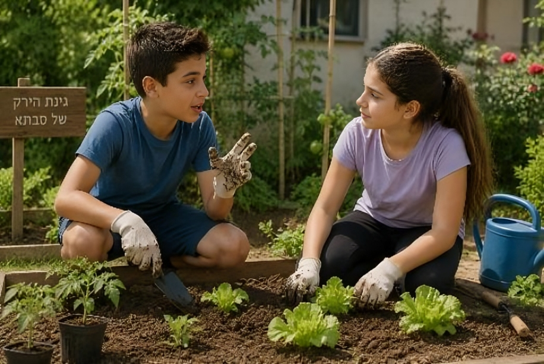
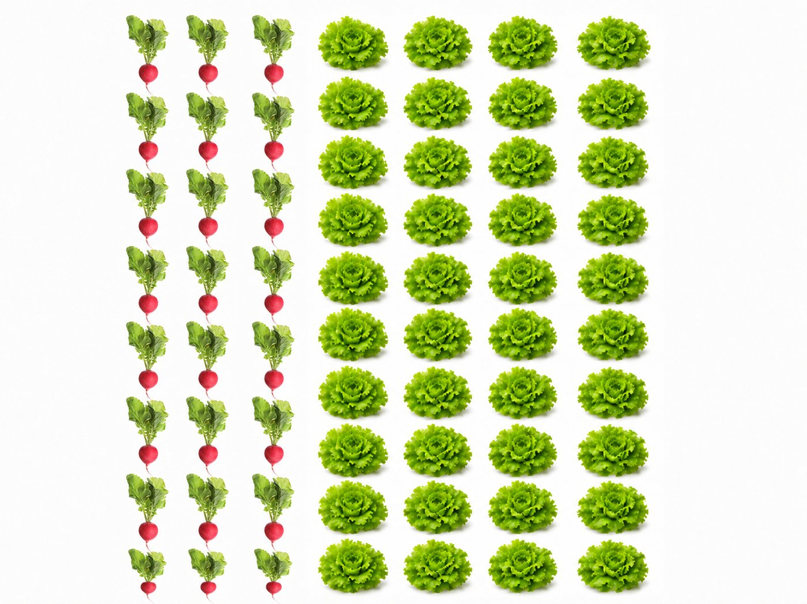
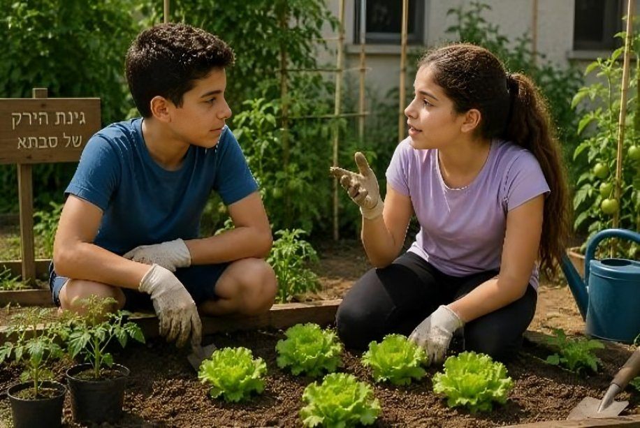
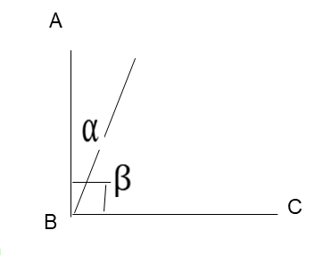

أي شخصية تريدون أن ترافقكم؟
اختاروا شخصية
أولمبيادة العلوم
انطلقت بعثتان إلى أولمبيادة العلوم وفازتا بنفس عدد الميداليات الذهبية بالضبط:
- البعثة أ: النسبة هي 1:4 (ميدالية ذهبية واحدة مقابل كل 4 مشاركين ومشاركات في البعثة).
- في البعثة ب: النسبة هي 1:8 (ميدالية ذهبية واحدة مقابل كل 8 مشاركين ومشاركات في البعثة).
أ. في أي بعثة عدد المشاركين والمشاركات أكبر برأيكم؟
ب. إذا فازت البعثة أ بـ 5 ميداليات ذهبية، كم مشاركًا يوجد في البعثة ب؟
ت. تفكير نسبي: أي بعثة حققت نسبة نجاح أعلى
(ميداليات أكثر بالنسبة إلى حجم البعثة)؟
لكي نجيب بسهولة عن أسئلة من هذا النوع، علينا:
- التعمق في طرق حساب الكميات من النسبة.
- لتقدير وقياس النتائج التي نحصل عليها من حساب الكميات بواسطة نسبة معطاة.
- ترسيخ فهم موضوع النسبة بمساعدة الحسابات الملائمة وبواسطة التقدير.
يبدو تحديًا حقيقيًا!
أنا مستعد!

كيف نستخدم النسبة لحساب مقدار الأجزاء في المجموعة؟
زرع علاء وأمل وياعيل في حديقة خضار الجدة 70 بذرة من الفجل والخس بنسبة 3:4.
ادّعى علاء:
نسبة 4 : 3.
أي إنه مقابل كل 3 حبات فجل ستُزرع في الحديقة، ستُزرع 4 بذور خس.

أي إنه من بين 7 خضروات من النوعين، نحصل على: 3 حبات فجل و-4 رؤوس خس.
استخدموا التطبيق، كبّروا عدد الصفوف بواسطة الشريط حتى تصلوا إلى عدد الصفوف الملائم لـ 70 خسة وفجلة معًا.
اختاروا إلى كم صف وصلتم:
هل سنحضّر سلطة في النهاية؟

تقترح أمل طريقة أسهل للحساب:
بما أن النسبة هي 3:4، فإن "الصحيح" لدينا هو 7 (4+3). ومعلوم لنا أيضًا أن بذور الفجل تشكّل 37 من مجموع البذور.
لدينا 70 بذرة، ولذلك يمكننا الحساب بحسب الجزء الذي وجدناه:
37 · 70 = 30 بذرة فجل
47 · 70 = 40 بذرة خس
واااو، أنت عبقرية!

يمكن أن نرى أن طريقة أمل تقودنا إلى نفس النتيجة، وهذه عمليًا هي المعادلة التي سنستخدمها لحساب حجم كل جزء في المجموعة.
نُكمل الاستنتاج معًا
عندما يكون حجم المجموعة والنسبة بين أجزائها معلومين لنا، يمكننا حساب حجم كل جزء باستخدام المعادلة التي أمامنا.
ماذا يمثّل كل عدد في المعادلة؟ اسحبوا كل تعريف إلى المكان المناسب.
سنبدأ بالتمرين بعد قليل،
لكن قبل ذلك، تعالوا نحلّ تمرينًا واحدًا معًا
النسبة – تعالوا نحل التمرين الأول معًا
اقرؤوا التمرين التالي. لا تحلوه، فقط انظروا إلى المعطيات وفكروا إذا كان لديكم اتجاه للحل.
لدى فادي ووائل توجد 56 بنّورة. النسبة بين عدد البنانير الحمراء وعدد البنانير الزرقاء هي 2:5. حصل فادي على البنانير الحمراء وحصل وائل على البنانير الزرقاء.
سنشرح الحل فورًا، خطوة بخطوة
النسبة بين عدد البنانير الحمراء وعدد البنانير الزرقاء هي 2:5. لذلك فإن "الصحيح" لدينا هو
2 + 5 = 7.
أ. هل صحيح أن لدى فادي يوجد 27 من البنانير؟
حصل فادي على البنانير الحمراء، أي إنه يوجد لديه 27 من البنانير.
حصل وائل على البنانير الزرقاء. إذا كانت النسبة 2:5، وحصل فادي على 27،
ب. على أي جزء حصل وائل؟
حصل وائل على 57 من البنانير.
حصل وائل على 57 من البنانير.
إذا كان لدى فادي 27 من البنانير، وكان هناك 56 بنورة بالمجموع، فيمكننا الحساب:
ت. 27⋅ 56 = ?
حصل فادي على 16 بنورة.
حصل فادي على 16 بنورة.
إذا كان لدى وائل 57 من البنانير، وكان هناك 56 بنورة بالمجموع، فيمكننا الحساب:
ث. 57⋅ 56 = ?
حصل وائل على 40 بنورة.
ث. طريقة أخرى:
إجمالي عدد البنانير هو 56.
حصل فادي على 16 بنورة.
لذلك، حصل وائل على:
56 − 16 = بنورة 40
حصل وائل على 40 بنورة.
ويمكننا أيضًا ترتيب البنانير الكرات في مجموعات مكونة من 7.
في كل مجموعة ستكون هناك بنورتان حمراوان و-5 بنانير زرقاء.
بما أنّ 8 = 7 ÷ 56،
فقط تكوّنت 8 مجموعات (في الصورة، كل مجموعة مرتبة في صف). .
لذلك، سيكون هناك 8 · صفوف 2 = 16 بنورة حمراء،
و- 8 · صفوف 5 = 40 بنورة زرقاء.
ماذا بقيَ عالقًا في عقولنا؟
سؤالان بسيطان للإحماء قبل أن نتقدم
في دكان سالم يوجد 60 قنينة مشروبات غازية، بعضها بنكهة التوت وبعضها بنكهة المانجو.
النسبة بين عدد قناني المشروب بنكهة التوت وعدد قناني المشروب بنكهة المانجو هي 2:3.
استخدموا التطبيق وساعدوا سالم على ترتيب القناني على الرفوف،
بحسب النسبة المذكورة.
في الرسم معطى أن الزاوية ∢ABC = 90°.
النسبة بين مقدار الزاوية α ومقدار الزاوية β هي 1:4.
أكملوا:

تلميح
بحسب النسبة 1:4، إلى كم جزء يجب تقسيم مقدار الزاوية الكاملة (∢ABC) للحصول على الزاوية β؟